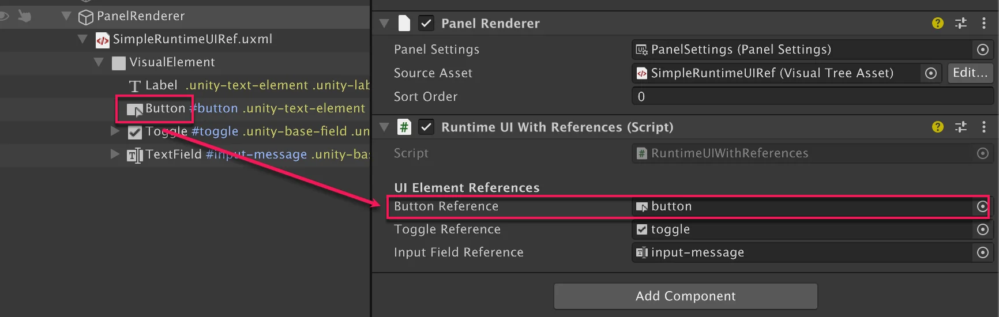
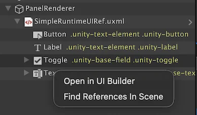
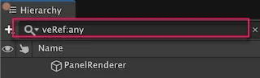

You can use UQuery to find visual elements in the UI hierarchy. However, this can lead to issues if the selector names change or if the hierarchy is modified. To address this, use visual element reference to access visual elements for runtime UI, which lets you connect script to element through the Inspector rather than code queries. It allows scripts to work with different UI layouts without code changes and makes them easier to reuse. It also promotes a more modular and maintainable codebase, as scripts aren’t tightly coupled to specific UI structures.
Note:: Visual element reference isn’t available for the Editor UI.
Use visual element reference when:
Use query-based access when:
Note: Visual element reference works only with the Panel Renderer component. If you use the legacy UI Document component for runtime UI, you must use query-based access to find visual elements. To migrate from UI Document components to Panel Renderer components, refer to Migration to Panel Renderer.
To implement visual element reference for your runtime UI, do the following in your MonoBehaviour script:
Start() method, register reference callbacks for each element reference.
For elements of a specific type, use VisualElementReference<T>. A typed reference only allows to select that element type in the Inspector and passes that type to the callbacks.
The following example is based on Get started with runtime UI and replaces the query-based access with visual element reference. It uses VisualElementReference<Button>, VisualElementReference<Toggle>, and VisualElementReference<TextField> to reference the buttons, toggles, and input fields respectively.
You can attach this script to the example’s GameObject instead of the original SimpleRuntimeUI.cs script, and assign Button, Toggle, and TextField to the respective reference fields in the Inspector. It maintains the same functionality as the original script.
using UnityEngine;
using UnityEngine.UIElements;
public class RuntimeUIWithReferences : MonoBehaviour
{
// Define VisualElementReferences for the visual elements you want to access.
[Header("UI Element References")]
public VisualElementReference<Button> buttonReference = new VisualElementReference<Button>();
public VisualElementReference<Toggle> toggleReference = new VisualElementReference<Toggle>();
public VisualElementReference<TextField> inputFieldReference = new VisualElementReference<TextField>();
private Button button;
private Toggle toggle;
private TextField inputField;
private int clickCount;
private void Start()
{
// Register callbacks for when each visual element reference is resolved.
buttonReference.RegisterReferenceResolvedCallback(SetupButton);
toggleReference.RegisterReferenceResolvedCallback(SetupToggle);
inputFieldReference.RegisterReferenceResolvedCallback(SetupInputField);
}
private void OnDisable()
{
// Clean up event listeners when the component is disabled.
if (button != null)
{
button.UnregisterCallback<ClickEvent>(PrintClickMessage);
}
if (inputField != null)
{
inputField.UnregisterCallback<ChangeEvent<string>>(InputMessage);
}
}
// Implement the setup methods for each visual element reference,
// which are called when the references are resolved.
private void SetupButton(Button resolvedButton)
{
button = resolvedButton;
button.RegisterCallback<ClickEvent>(PrintClickMessage);
}
private void SetupToggle(Toggle resolvedToggle)
{
toggle = resolvedToggle;
}
private void SetupInputField(TextField resolvedInputField)
{
inputField = resolvedInputField;
inputField.RegisterCallback<ChangeEvent<string>>(InputMessage);
}
private void PrintClickMessage(ClickEvent evt)
{
++clickCount;
Debug.Log($"{"button"} was clicked!" +
(toggle != null && toggle.value ? " Count: " + clickCount : ""));
}
public static void InputMessage(ChangeEvent<string> evt)
{
Debug.Log($"{evt.newValue} -> {evt.target}");
}
}
For elements of any type, use VisualElementReference. It lets you to select any element type in the Inspector and passes that type to the callbacks.
The following example sets up an element’s background color to red. You can attach this script to the previous example’s GameObject, and assign any element to the reference field in the Inspector to make its background color red.
using UnityEngine;
using UnityEngine.UIElements;
public class VisualElementReference_Example : MonoBehaviour
{
// Set via the inspector
public VisualElementReference elementReference = new VisualElementReference();
public Color customColor = Color.red;
void Start()
{
elementReference.RegisterReferenceResolvedCallback(SetupElementBackground);
}
void SetupElementBackground(VisualElement ve)
{
ve.style.backgroundColor = customColor;
}
}
You can enable hierarchy integration to drag visual elements from the Hierarchy window directly into the reference fields in the Inspector.
To enable hierarchy integration, do the following:

To open the referenced visual element in UI Builder, right-click the element in the Hierarchy window and select Open in UI Builder. This opens the UXML in UI Builder and highlights the element.

To find references to a visual element in the scene, right-click the element in the Hierarchy window and select Find References In Scene. This opens the Search window. In the Search window, enter the veRef filter to find visual element references.
